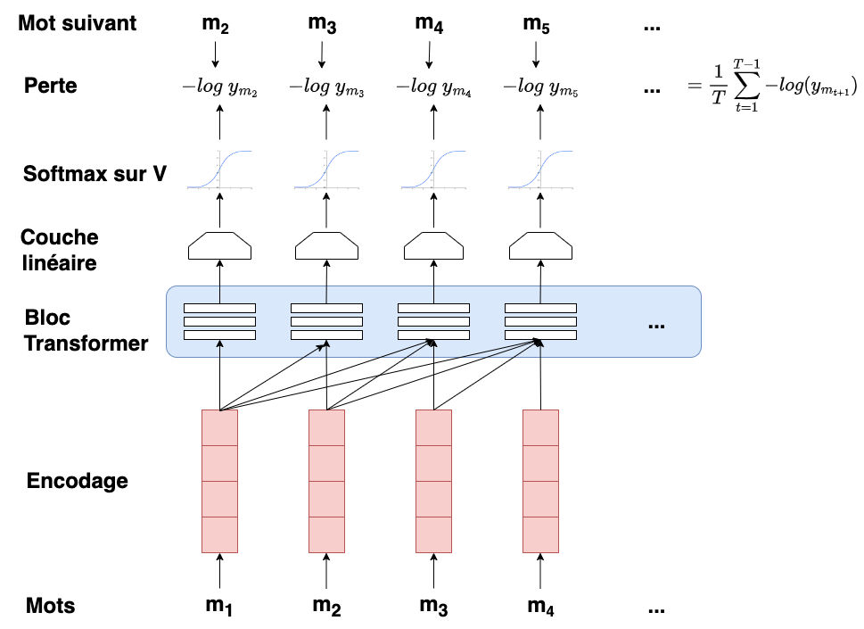
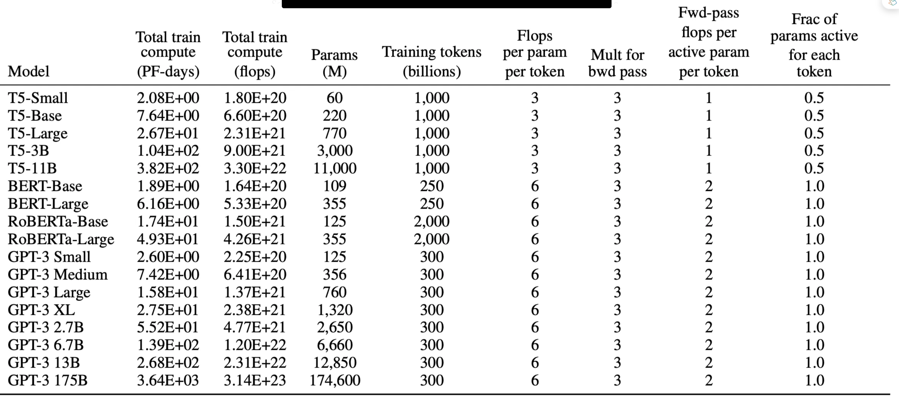
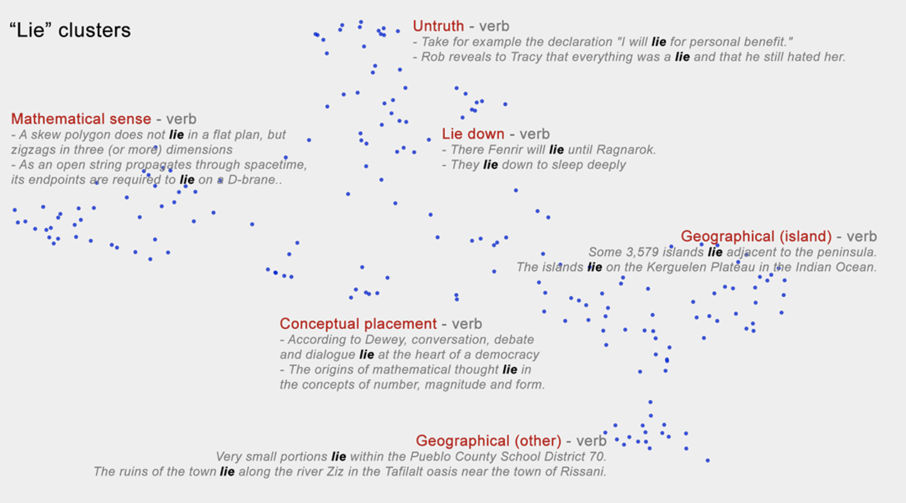

Introduction aux LLM#
Les grands modèles de langage (large Language Models, LLM) sont des modèles entraînés par pré-apprentissage de connaissances sur le langage et le monde à partir de grandes quantités de texte. Les LLM affichent des performances remarquables dans toutes sortes de tâches liées au langage naturel grâce aux connaissances qu’ils acquièrent lors du pré-apprentissage. Ils ont particulièrement transformé les tâches de production de texte, comme le résumé, la traduction automatique, la réponse aux questions ou encore les chatbots.
Rappels sur les transformers#
L’architecture standard pour la construction de ces LLM est le transformer. Pour rappel, un transformer, utilisé sur du texte, prend en entrée une séquence de mots et calcule une prédiction du mot suivant, ainsi qu’une suite de valeurs (embeddings) qui modélise la signification contextuelle de chacun des mots de l’entrée.
Les transformers sont constitués de piles de blocs (Fig. 56), chacun d’entre eux étant un réseau multicouche qui fait correspondre des séquences de vecteurs d’entrée \((\boldsymbol x_1,\cdots \boldsymbol x_n)\) à des séquences de vecteurs de sortie de même longueur. Ces blocs sont constitués par la combinaison de couches linéaires, de perceptrons multicouches et de couches d’auto-attention, qui permettent à un réseau d’extraire et d’utiliser directement des informations à partir de contextes arbitrairement larges.
Génération par échantillonnage#
Le principe de génération des LLM repose sur le choix du mot unique à générer en fonction du contexte et des probabilités que le modèle attribue aux mots possibles. Cette tâche est appelée décodage. Le décodage à partir d’un modèle de langage de gauche à droite (ou de droite à gauche pour les langues comme l’arabe), et donc le choix répété du mot suivant conditionné par nos choix précédents, est appelé génération autorégressive ou génération LM causale (les alternatives telles que les modèles de langage masqués ne sont pas causales car elles peuvent prédire les mots en fonction des mots passés et futurs).
La méthode de décodage la plus courante est l”échantillonnage : l’échantillonnage à partir de la distribution des mots d’un modèle consiste à choisir des mots aléatoires en fonction de leur probabilité attribuée par le modèle. En d’autres termes, on choisit itérativement un mot à générer en fonction de sa probabilité dans le contexte défini par le modèle. Dans le cadre des LLM, on procède alors comme suit : à chaque étape, on échantillonne des mots en fonction de leur probabilité conditionnée par les choix précédents, et on utilise le LLM comme modèle de probabilité. L’algorithme correspondant est appelé échantillonnage aléatoire. Pour générer une séquénce de mots \(m_1\cdots m_N\) à partir de la distribution \(p\) définie par le LLM on utilise l’algorithme suivant :
Algorithm 10 (Echantillonnage aléatoire)
\(i=1\)
\(m_1\sim p(m)\)
Tant que \(m_i\neq EOS\)
\(i=i+1\)
\(m_i\sim p(m_i|m_{<i})\)
Cet algorithme ne fonctionne pas de manière efficace. Le problème est que, même s’il génère généralement des mots sensés et hautement probables, la queue de la distribution \(p\) contient de nombreux mots étranges et peu probables, et même si chacun d’entre eux est peu probable, si l’on additionne tous les mots rares, ils constituent une partie suffisamment importante de la distribution pour être choisis assez souvent et générer des phrases sans sens. C’est pourquoi, au lieu de procéder à un échantillonnage aléatoire, on utilise plutôt des méthodes d’échantillonnage qui évitent de générer des mots très improbables.
Les méthodes présentées ci-après ont chacune des paramètres qui permettent d’arbitrer entre deux facteurs importants de la génération : la qualité et la diversité. Les méthodes qui mettent l’accent sur les mots les plus probables tendent à produire des générations jugées plus précises, plus cohérentes et plus factuelles, mais aussi plus ennuyeuses et plus répétitives. Les méthodes qui accordent un peu plus d’importance aux mots de probabilité moyenne tendent à être plus créatives et plus diversifiées, mais moins factuelles et plus susceptibles d’être incohérentes ou de qualité médiocre.
Echantillonnage top-\(k\)#
Au lieu de générer le mot le plus probable, on tronque la distribution aux \(k\) mots les plus probables, on la renormalise et on tire un échantillon de ces \(k\) mots en fonction de leurs probabilités.
Algorithm 11 (Echantillonnage top-\(k\))
Pour chaque mot \(m\) du vocabulaire \(V\)
Calculer la vraisemblance de \(m\) étant donnée le contexte \(p(m|m_<)\)
Trier les mots par vraisemblance décroissante, ne retenir que les \(k\) premiers
Renormaliser les scores pour créer une distribution de probabilité
Tirer un mot selon cette nouvelle distribution.
Si \(k\)=1, on parle de décodage glouton. Sinon, on génère un mot de probabilité « suffisante », permettant d’avoir un texte plus diversifié et de qualité suffisante. L’un des problèmes de l’échantillonnage top-\(k\) est que \(k\) est fixe, mais que la forme de la distribution des probabilités sur les mots diffère selon les contextes. Si on fixe \(k\) = 5, les 5 premiers mots seront parfois très probables et incluront la majeure partie de la masse de probabilité, mais d’autres fois, la distribution de probabilité sera plus plate et les 5 premiers mots n’incluront qu’une petite partie de la masse de probabilité.
Echantillonnage top-\(p\)#
Egalement connu sous le nom de nucleus sampling,l’échantillonnage top-\(p\) consiste à conserver non pas les \(k\) premiers mots, mais les \(p\) premiers pourcents de la masse de probabilité. L’objectif est le même : tronquer la distribution pour éliminer les mots les plus improbables. Mais en mesurant la probabilité plutôt que le nombre de mots, on espère que la mesure sera plus robuste dans des contextes très différents, en augmentant et en diminuant dynamiquement le nombre de mots candidats.
Les auteurs de cette méthode ont montré qu’en filtrant la distribution de probabilité pour ne conserver que les mots les plus pertinents tout en permettant une certaine variabilité, le « nucleus sampling » permet de générer du texte à la fois cohérent et diversifié. De plus, le seuil \(p\) peut être ajusté pour contrôler le niveau de créativité et d’originalité du texte généré, permettant aux utilisateurs de trouver le bon équilibre pour leur application spécifique. Enfin, contrairement au top-\(k\) qui peut inclure des mots peu probables mais toujours dans les \(k\) premiers, le top-\(p\) limite le choix aux mots qui, ensemble, représentent une portion significative de la probabilité totale, réduisant ainsi le risque de générer des mots incohérents.
Echantillonnage avec paramètre de température#
Dans l’échantillonnage avec paramètre de température (temperature sampling), la distribution n’est pas tronquée mais modifiée. L’intuition provient de la thermodynamique, où un système à haute température est très flexible et peut explorer de nombreux états possibles, tandis qu’un système à basse température est susceptible d’explorer un sous-ensemble d’états à faible énergie (meilleurs). Ici, on va augmente rprogressivement la probabilité des mots les plus probables et diminue la probabilité des mots rares.
Rappelons (Fig. 54) que le modèle calcule les scores pour tous les prochains tokens possibles en fonction du contexte de la séquence d’entrée. Ces scores représentent les prédictions brutes du modèle pour chaque mot. Une fonction softmax est ensuite appliquée aux scores, les convertissant en probabilités dont la somme est égale à un. Sur la base de ces probabilités, le modèle échantillonne le token suivant. L’échantillonnage avec paramètre de température divise simplement les scores par \(\tau\in]0,1]\) avant passage de la fonction softmax. Lorsque \(\tau\) est proche de 1, la distribution change peu. Plus \(\tau\) diminue, plus les scores transmis au softmax sont importants. Ainsi, il en résulte une distribution avec des probabilités accrues pour les mots les plus probables et des probabilités réduites pour les mots à faible probabilité. Lorsque \(\tau\) se rapproche de 0, la probabilité du mot le plus probable approche 1 (on approxime la fonction argmax).
Remark 4
On peut également vouloir aplatir la distribution de probabilité du mot plutôt que de la rendre très typée sur les mots les plus probables. L’échantillonnage peut également s’appliquer dans ce cas avec \(\tau>1\).
Entraînement des transformers#
Pour entraîner un transformer en tant que modèle de langage, on un algorithme d’auto-supervision (self supervised). On utilise comme base d’apprentissage un corpus de texte et, à chaque pas de temps \(t\), on demande au modèle de prédire le mot suivant. Aucune étiquette n’est nécessaire (donc pas d’apprentissage supervisé), la séquence naturelle des mots constitue sa propre supervision. On minimise alors l’erreur de prédiction du vrai mot suivant dans la séquence d’apprentissage, en utilisant l’entropie croisée comme fonction de perte :
La vraie distribution \(\boldsymbol y_t\) provient de la connaissance du mot suivant. Ce dernier peut être représenté par un vecteur one-hot. Ainsi, la perte d’entropie croisée pour la modélisation linguistique est déterminée par la probabilité que le modèle attribue au mot suivant correct. Ainsi, à l’instant \(t\), la perte peut être simplifiée comme le logarithme négatif de la probabilité que le modèle attribue au mot suivant dans la séquence d’apprentissage :
Ainsi, à chaque position de mot \(t\) de l’entrée, le modèle prend en entrée la séquence correcte de jetons \(m_{1:t}\) et l’utilise pour calculer une distribution de probabilité sur les mots suivants possibles afin de calculer la perte du modèle pour le jeton suivant \(m_{t+1}\). Ensuite, on passe au mot suivant n ignorant ce que le modèle a prédit pour le mot suivant et on utilise à la place la séquence correcte de mots \(m_{1:t+1}\) pour estimer la probabilité du mot \(m_{t+2}\). Cette idée selon laquelle on donne toujours au modèle la séquence historique correcte pour prédire le mot suivant (plutôt que de lui fournir son meilleur cas du pas de temps précédent) s’appelle le forçage de l’enseignant (teacher forcing).
Remark 5
Le terme « forçage de l’enseignant » peut être justifié en comparant le modèle à un étudiant humain qui passe un examen en plusieurs parties où la réponse à chaque partie dépend de la réponse à la partie précédente. Dans cette analogie, plutôt que de noter chaque réponse à la fin, avec le risque que l’étudiant échoue à chaque partie même s’il n’a fait qu’une erreur dans la première, un enseignant enregistre la note pour chaque partie individuelle et indique ensuite à l’étudiant la bonne réponse, à utiliser dans la partie suivante. Cette technique est également largement utilisée dans les réseaux récurrents.
La figure (Fig. 83) illustre le mécanisme d’entraînement. À chaque étape, compte tenu de tous les mots précédents, la couche de transformers finale produit une distribution de sortie sur l’ensemble du vocabulaire. Au cours de l’apprentissage, la probabilité attribuée au mot correct est utilisée pour calculer la perte d’entropie croisée pour chaque élément de la séquence. La perte pour une séquence d’apprentissage est la perte d’entropie croisée moyenne sur l’ensemble de la séquence. Les poids du réseau sont ajustés pour minimiser la perte moyenne d’entropie croisée sur la séquence d’apprentissage par descente de gradient.

Fig. 83 Entraînement d’un LLM#
Chaque exemple d’entraînement peut être traité en parallèle puisque la sortie pour chaque élément de la séquence est calculée séparément. Les grands modèles sont généralement entraînés en utilisant l’intégralité de la fenêtre de contexte (2048 ou 4096 tokens pour GPT3 ou GPT4) avec du texte. Si les documents sont plus courts, plusieurs documents sont regroupés dans la fenêtre avec un token spécial de fin de texte permettant de les séparer. La taille du lot pour la descente de gradient est généralement assez importante (GPT-3.5 utilise par exemple un lot de 3,2 millions de tokens).
Les temps d’entraînement peuvent être très longs (Fig. 83), même sur des architectures puissantes.

Fig. 84 Complexité de l’entraînement de quelques modèles (source : [1])#
Les LLM sont principalement entraînés à partir de textes récupérés sur le web, auxquels s’ajoutent des données supplémentaires sélectionnées (par exemple en fonction d’un domaine spécifique). Ces corpus d’entraînement étant très vastes, ils sont susceptibles de contenir de nombreux exemples naturels qui peuvent être utiles pour les tâches de traitement du langage, tels que des paires de questions/réponses (par exemple à partir de listes de FAQ), des traductions de phrases entre différentes langues, des documents accompagnés de leurs résumés … Le texte du web est généralement extrait de corpus de pages Web explorées automatiquement, comme le Common Crawl. De nombreuses versions de ces corpus, existent, comme par exemple le Colossal Clean Crawled Corpus C4, un corpus de 156 milliards de tokens anglais filtrés de diverses manières (déduplication, suppression du langage non naturel comme le code, des phrases contenant des mots offensants provenant d’une liste de blocage). Une [étude])(https://arxiv.org/abs/2104.08758) a analysé le contenu de C4 et montré que les site explorés étaient en partie issus de brevets, de Wikipédia, de sites militaires américains et de sites d’information. Wikipédia joue un rôle dans la formation de nombreux modèles de langage, tout comme les corpus de livres. Les modèles GPT3, par exemple, sont entraînés principalement sur le web (429 milliards de tokens), quelques textes de livres (67 milliards de tokens) et Wikipedia (3 milliards de tokens).
Utilisation pour l’encodage contextuel#
Etant donné un modèle LLM et une nouvelle séquence de mots, on peut considérer que la séquence des sorties du modèle constitue un encodage contextuel pour chaque token de l’entrée. Ces encodages contextuels sont des vecteurs représentant un aspect de la signification d’un token dans son contexte, et peuvent être utilisés pour toute tâche nécessitant la signification de tokens ou de mots. Plus formellement, étant donné une séquence de tokens d’entrée \(\boldsymbol x_1\cdots \boldsymbol x_N\), on peut utiliser le vecteur de sortie \(\boldsymbol z_i\) de la dernière couche du modèle comme représentation du token \(\boldsymbol x_i\) dans le contexte de laséquence \(\boldsymbol x_1\cdots \boldsymbol x_N\). Au lieu d’utiliser uniquement le vecteur \(\boldsymbol z_i\) de la dernière couche du modèle, il est courant de calculer une représentation pour \(\boldsymbol x_i\) en faisant la moyenne des jetons de sortie \(\boldsymbol z_i\) de chacune des \(M\) dernières couches du modèle (souvent \(M\)=4). Ces encodages peuvent alors être utilisés pour mesurer la similarité sémantique de mots (Fig. 85) dans un contexte (par exemple reine dans « La reine prend le fou » et « La reine d’Angleterre est morte le 8 septembre 2022 ») ou la désambiguation.

Fig. 85 Encodage contextuel du mot « Lie » en anglais. Projection non linéaire des tokens de sortie dans un espace à deux dimensions pour visualisation Projection des (source : [2])#
Performance des modèles#
Les performances des LLM sont principalement déterminées par trois facteurs : la taille du modèle (le nombre de paramètres sans compter les encodages), la taille de l’ensemble d’apprentissage et la ressource informatique utilisée pour l’apprentissage. Les relations entre ces facteurs et les performances sont connues sous le nom de lois de mise à l’échelle : les performances d’un grand modèle linguistique (la perte) évoluent selon une loi de puissance en fonction de chacune de ces trois propriétés de l’apprentissage du modèle.
Points d’attention#
les LLM doivent être manipulés avec précaution, la pertinence des textes générés pouvant être parfois remise en cause. Ainsi, ces modèles sont sujets :
à la génération de textes toxiques : les données d’entraînement étant (ou pouvant être) constituées de stéréotypes socioculturels en raison des préjugés inhérents et du manque de diversité, Les LLM peuvent produire et renforcer ces idées nuisibles contre les groupes défavorisés de la société.
aux hallucinations : ces dernières font référence à des morceaux de texte générés, syntaxiquement et sémantiquement corrects mais déconnectés de la réalité et basées sur de fausses hypothèses. La génération a été rendue possible car le modèle souhaite avant tout satisfaire la cohérence statistique avec la demande (le prompt) de l’utilisateur.
aux problèmes de confidentialité car ils peuvent divulguer des informations sur leurs données d’apprentissage. Il est ainsi possible pour un attaquant d’extraire le texte des données d’apprentissage d’un modèle de langage, comme le nom, le numéro de téléphone et l’adresse d’une personne. C’est un problème si de grands modèles de langage sont formés sur des ensembles de données privés.
Implémentation#
Le chapitre suivant, consacré au fine tuning, implémentera un modèle GPT2.
Tom Brown, Benjamin Mann, Nick Ryder, Melanie Subbiah, Jared D Kaplan, Prafulla Dhariwal, Arvind Neelakantan, Pranav Shyam, Girish Sastry, Amanda Askell, Sandhini Agarwal, Ariel Herbert-Voss, Gretchen Krueger, Tom Henighan, Rewon Child, Aditya Ramesh, Daniel Ziegler, Jeffrey Wu, Clemens Winter, Chris Hesse, Mark Chen, Eric Sigler, Mateusz Litwin, Scott Gray, Benjamin Chess, Jack Clark, Christopher Berner, Sam McCandlish, Alec Radford, Ilya Sutskever, and Dario Amodei. Language models are few-shot learners. In H. Larochelle, M. Ranzato, R. Hadsell, M.F. Balcan, and H. Lin, editors, Advances in Neural Information Processing Systems, volume 33, 1877–1901. Curran Associates, Inc., 2020. URL: https://proceedings.neurips.cc/paper_files/paper/2020/file/1457c0d6bfcb4967418bfb8ac142f64a-Paper.pdf.
Andy Coenen, Emily Reif, Ann Yuan, Been Kim, Adam Pearce, Fernanda B. Viégas, and Martin Wattenberg. Visualizing and measuring the geometry of BERT. CoRR, 2019. URL: http://arxiv.org/abs/1906.02715, arXiv:1906.02715.